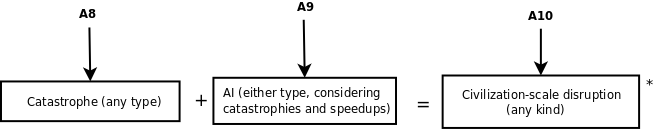

The timeline of A8 showed your estimate that a catastrophe of any sort will halt progress.
A9 displayed the probability of either type of AI having occurred at various times in the future, taking into account effects of intelligence enhancement technologies.

The information from A8 and A9 combined gives the probability for a civilization-scale disruption (either human-level AI or a catastrophe halting all scientific progress) having occurred at various times in the future.
*The probabilities aren't just added, see math details for more information.
In-depth math details.Thanks for completing the process! You can go back and change your inputs if you want to see how they affect the answers, or you click here if you want to learn more.